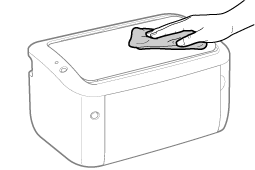

|
Før utsiden av skriveren rengjøres, se "Merk (Rengjøring)".
|
1
Skru skriveren AV, koble deretter kablene eller ledningene fra skriveren.

<Hvordan koble fra kabelen eller ledningen>
|
USB-kabel
|
(2) Skru av datamaskinen.
(3) Koble fra kabelen fra skriveren.
|
|
Strømledning
|
(4) Koble fra strømpluggen fra stikkontakten.
(5) Koble fra kabelen fra skriveren.
|
2
Lukk flerfunksjonsskuffen og utskriftsbrettet etter behov.
3
Vri en myk klut fuktet med vann eller et mildt såpemiddel, og tørk av skitten.

4
Etter at skitten er tørket bort, tørk av skriveren med en tørr klut.
5
Når skriveren er helt tørr, koble til kabelen eller ledningen som er fjernet.
<Hvordan koble til kabelen eller ledningen>
|
USB-kabel
|
Koble USB-kontakten til skriveren.
|
|
Strømledning
|
(1) Sett strømledningen i kontakten på skriveren.
(2) Sett strømpluggen i stikkontakten.
|